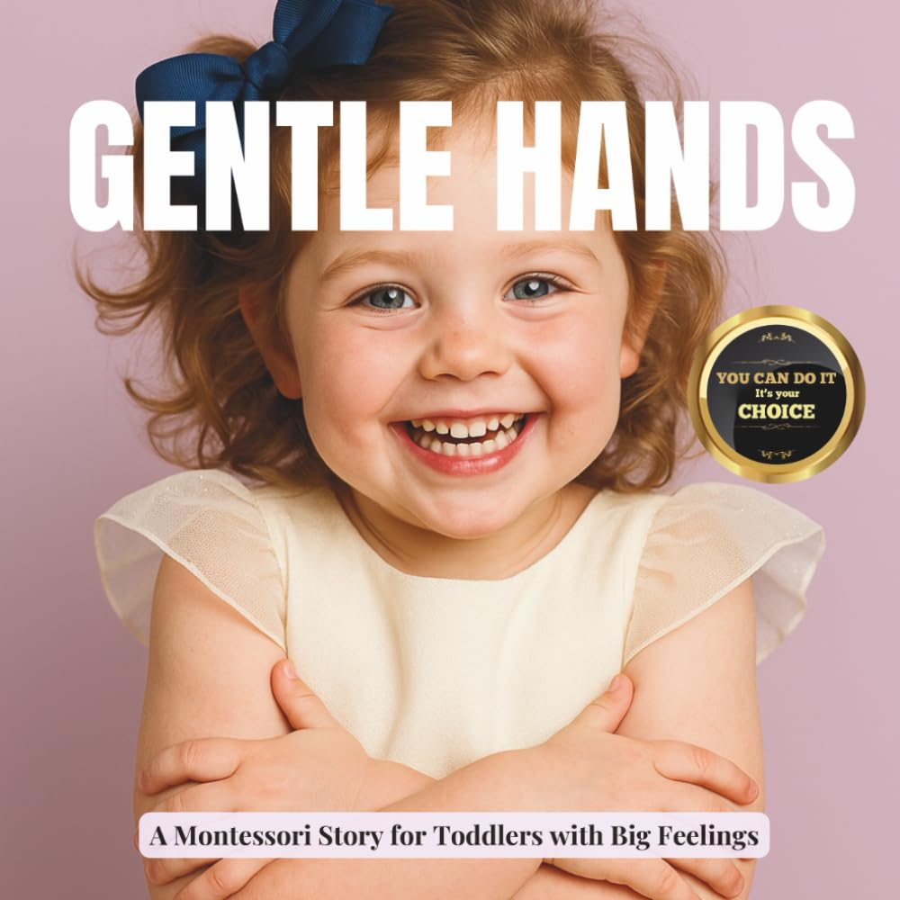

My Toddler Bites When Angry: What to Do and Why the Bite Comes First
Maya was 22 months old the first time she bit her cousin. No warning, no grunt. Full teeth on his forearm, and then his scream filled the kitchen. Her mother stood there with her hands over her mouth, unsure whether to cry or apologize first.
When a toddler bites when angry, the bite is a motor impulse that outpaces the brain's brake. Between 18 and 30 months, the emotional center fires faster than the prefrontal cortex can respond. You stop it by blocking the bite before it lands, naming the feeling out loud immediately after, and offering a physical outlet every single time, consistently, for weeks. That is the whole method, and the rest of this article explains exactly how to do each step.
Why Do Toddlers Bite When They Are Angry?
The bite starts in the limbic system, the part of the brain that registers distress and threat. When a toddler is flooded with anger, whether from a toy being grabbed or a transition they did not want, the limbic system sends out a motor impulse before the prefrontal cortex can intervene.
Dr. Daniel Siegel, clinical professor of psychiatry at UCLA, described this in his 2011 work on child development as the "downstairs brain flooding the upstairs brain." The downstairs brain registers the emotion and fires; the upstairs brain, which would weigh consequences and choose words, has no time to act. In toddlers, that coordination is still forming. The flood happens and the bite is already in motion before any reasoning begins.
A second factor makes biting specific to this age window. At 18 to 30 months, a toddler's emotional vocabulary is far behind their emotional experience. They can feel rage at a level that would bring most adults to their knees, but they cannot yet say "I am furious and I want that back." The body does what the mouth cannot. Biting is also sensory: the jaw provides proprioceptive input, a pressure signal that briefly quiets the overload of being enraged.
Toddlers in this window are also processing a massive sensory load, their nervous systems taking in more input per hour than at almost any other point in development, and the ability to self-regulate arousal is built through experience they do not yet have. Anger is rarely the only thing in the room. There is also noise, movement, hunger, fatigue. The bite is the moment the tank overflows.
This is why saying "we don't bite" in the middle of the flood does nothing. The words arrive after the circuit has already fired.
What Should You Do When Your Toddler Bites?
The sequence matters. Do not skip steps.
Before the bite lands, put your palm flat between the child's mouth and the target. Say one word: "Stop." One word, calm and firm. Your body is the intervention, not your reasoning.
Naming the feeling comes next, before any consequence or correction. "You are so angry right now. You wanted that toy." Say this looking at the child's face. The child who is biting also needs to feel seen, or the anger escalates further. Three to five seconds of this is enough.
Immediately give a physical outlet. "Squeeze my hands. Squeeze as hard as you can." Hold out your hands palms up and let them grip. Some children respond better to stomping: "Stomp your feet right here, like this." The jaw impulse needs somewhere to go, and you are redirecting it to another high-pressure sensory channel.
Once the child is calm, usually 60 to 90 seconds after the block, give a brief and neutral consequence. "We don't bite. Biting hurts. [Name] is going to need a minute." One sentence. Toddlers cannot connect a long lecture to an event that is already 90 seconds in the past.
If the bite already landed before you could block it, go to the victim first. Completely. Sit with them, acknowledge their pain, check the arm. Do this in full view of the biter, because the child who was hurt needs to come first, and the biter can observe that biting has a real consequence: everyone's attention moves to the person who was hurt.
After the consequence, repair. "I love you. I know that was hard." Two sentences. Repair reattaches the relationship so the next intervention can reach the child. A child who feels cut off from the parent after an emotional event becomes harder to redirect in the future.
The fallback, when biting keeps happening in the same afternoon: separate the children and call the day. Some days the nervous system is overloaded and no script will fix what only sleep can. Knowing when to end a playdate is also a tool.
What Gets Harder Before It Gets Better?
Expect the behavior to increase in frequency for the first one to three weeks of consistent response. The toddler's nervous system is testing whether the new pattern is real, and it will push back. Parents who interpret the spike as proof the approach is failing and abandon the routine are often the ones who still have a biter at age three.
The physical block catches parents off guard because it feels aggressive. Lean into it anyway. You are stopping the child from doing something their own nervous system will not let them feel genuine remorse about for another year or two. A second thing surprises most parents: some toddlers switch from biting to hitting when biting is consistently blocked. This is progress. Hitting is easier to redirect and easier to intercept. Stay the course.
Books that give children a visual language for gentle touch can reinforce what you are practicing at home. Gentle Hands for Toddlers uses real Montessori photographs to show children what kind touch looks like, giving them a visual vocabulary for body control before the moment of anger arrives.
Maya's mother made it six weeks before the biting stopped entirely. At week two she almost abandoned the routine because nothing seemed to be changing. At week four, Maya stomped her own feet, without being prompted, when her cousin grabbed her block. One small degree. That is what progress looks like at this age.
FAQ
Is it normal for a 2-year-old to bite when angry?
Yes. The American Academy of Pediatrics notes that biting peaks between 18 and 30 months, because language development has not yet caught up with emotional intensity at this age. It does not indicate an aggression disorder or a problem with the child's temperament. It indicates a nervous system still under construction, responding the only way it can when words are not yet available.
How long does the toddler biting phase last?
With consistent intervention, most children show significant reduction in biting within four to eight weeks. Without any change in adult response, the behavior often persists through age three and sometimes beyond, because the child's nervous system never gets the rerouting it needs. The phase has a natural end as language expands, but consistent adult response shortens it considerably.
Should I bite my toddler back to show them how it hurts?
Pediatric behaviorists stopped recommending this approach in the 1990s for a specific mechanical reason: a toddler in a flooded emotional state cannot make the cognitive leap from "I was just bitten" to "so that is what I did." They experience it as an attack from a trusted adult, which raises baseline stress and makes biting more likely over time. Name the feeling and offer the physical outlet instead.
The scripts in this article cover the moment of crisis. If you want a tool that works in the quieter hours before the next hard moment, see Gentle Hands for Toddlers, a real-photo Montessori book that builds a child's visual vocabulary for kind touch and body control. Pair it with the block-and-name routine above and you are working both sides of the problem: the in-the-moment response and the daily practice that makes self-control possible over time.